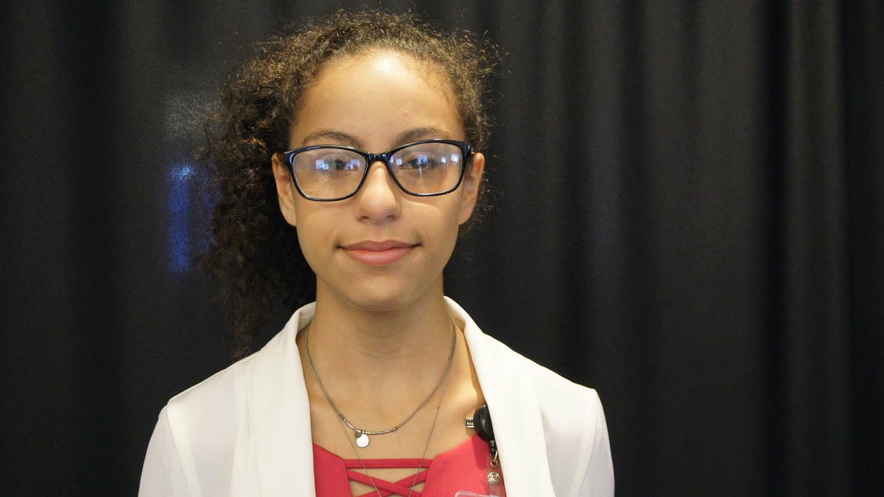
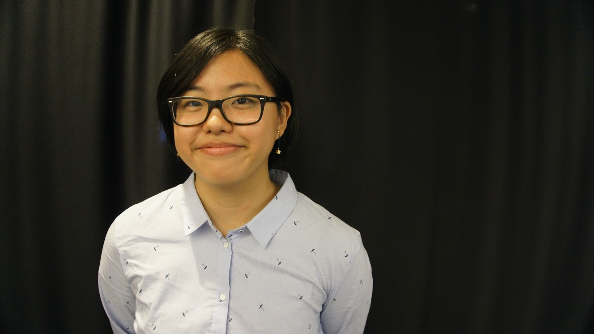
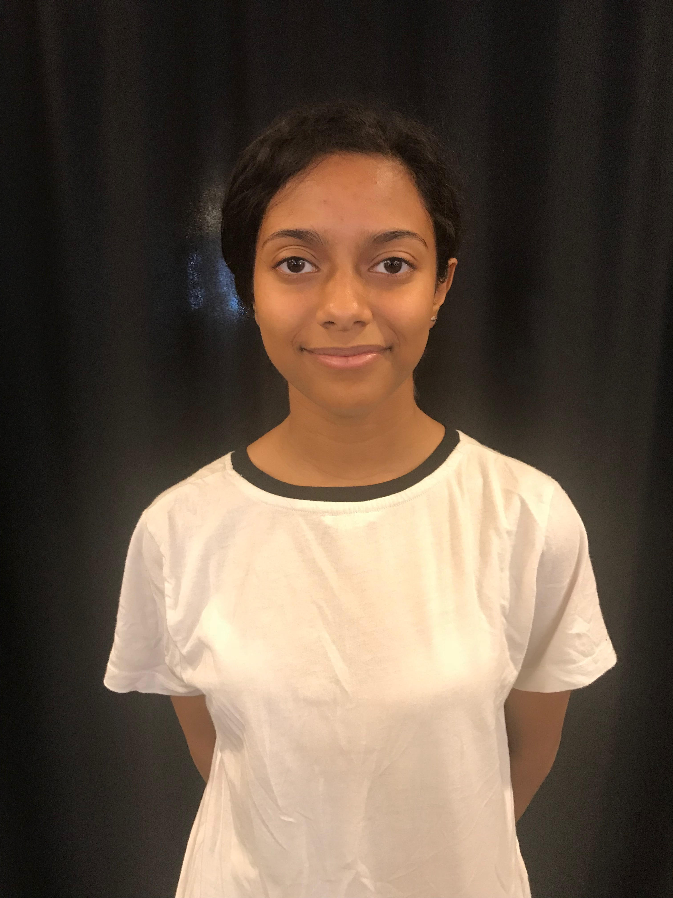

Welcome to M.A.A.S - Minorities Assemble Assistance Service. We help many people find their dream job that many minorities have trouble getting. We try our best to find the perfect job just for you.
"A little consideration, a little thought for others, makes all the difference"~ Eeyore
M.A.A.S helps many people find jobs that fit their description that other job sites may not give. Making it easier for the user, so less work for you. We created M.A.A.S to help minorities find jobs that aren't always given to them in the work force. According to Bureau of Labor Statistics, people of color make up nearly one-third of labor forces. M.A.A.S tries its very best to diversify the work force.
Sara Missak: Is an rising senior at Old Bridge High School. Sara wants to attend Princeton University and major in Computer Science because she loves coding.
She also loves to sing and is currently learning how to play the guitar. Sara is ranked 21 in her class of about 683. She also loves to listen to music and she enjoys most genres.
Her favorite genres are is Pop, R&B, and Hip-Hop. She loves Girls Who Code and does not want it too end.

Madison Shimbo: Madison is going to be an incoming senior at the Bronx High School of Science. Ever since her first real computer scince course
in sophomore year, Madison fell in love with coding and had been intrested in going into the feild for a while now.She plans to major
in engineering and/or computer science in college and minor in Graphic Design or something math related. Besides coding, Madison enjoys
drawing, playing tennis and table tennis, binging her favorite shows on Netflix, and spending timre with her friends. She enjoys the color
red, pasta, all genres of music, and chilly, cloudy days. She's also terribly sad that her Girls Who Code program has to end!

Anais Jaikissoon: Is an incoming Junior who goes to John Adams High School and is currently in International Baccalaureate,
on her free time she likes to take long naps and go watch action movies. When Anais gets older she is going to be an activist for women's rights and become a web developer.
Anais is disapointed that Girls Who Code is going to end and she is going to miss her sisters deeply.

Aulexa Colon: Is an incoming senior. Ever since seening her mom work in coding and computers, it inspired her to give it a try. She enjoys it
very much and is happy she started to learn how to code. Her mother is a big inspiration in her life. Besides being on the computer, she
is intrested in art, playing the ukulele, and photography.